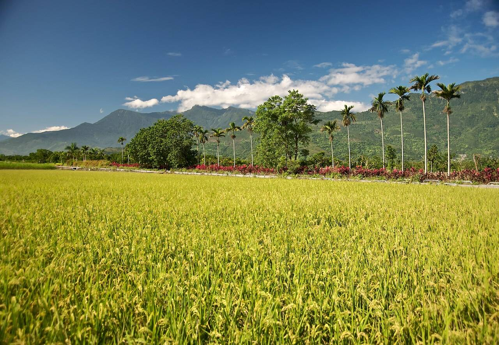

認識品牌與人
誰在種我們吃的米？

一對夫妻，一片田
湯英華、曾盈婷夫妻以「日晒米屋－鹿光米」為品牌，堅持友善耕作。
他們有一個很單純的念頭：讓更多人知道鹿谷米的美味，想成為「鹿谷之光」。
請把左邊的示意照換成夫妻倆的肖像或田間工作照。一定要先取得本人同意，或使用農場授權的照片並註明「照片提供：日晒米屋－鹿光米」。
一路走來
- 2012轉型為小農，成立「瑞田日光米」品牌。
- 2016參與臺大實驗林共榮計畫輔導，開始種植「台南16號」，培育出「鹿光米」。
- 2021「鹿光米」獲選南投縣農村特色產品。
你知道「台南16號」是什麼嗎？
它是一種稻米的品種名稱，就像蘋果有富士、蜜蘋果一樣。農場選擇這個品種，再用自己的方法照顧，種出了「鹿光米」。
友善耕作，利益眾生
從田地到餐桌，讓每顆稻米都包含對生態環境、農民與消費者的敬意。
夫妻倆也是老師：他們走進小學和社區推廣食農教育，帶大家體驗耕耘、插秧、管理、收割、曬穀、風選、碾米，最後煮成香噴噴的米飯。
看看農場的一年
影片：鹿光米農場的一年來的生活點滴（YouTube，組員提案所列）。以嵌入方式播放，版權屬原上傳者。
訪談農場主人，寫下一句他們親口說的話，放在這一頁最顯眼的地方，並註明訪談日期。